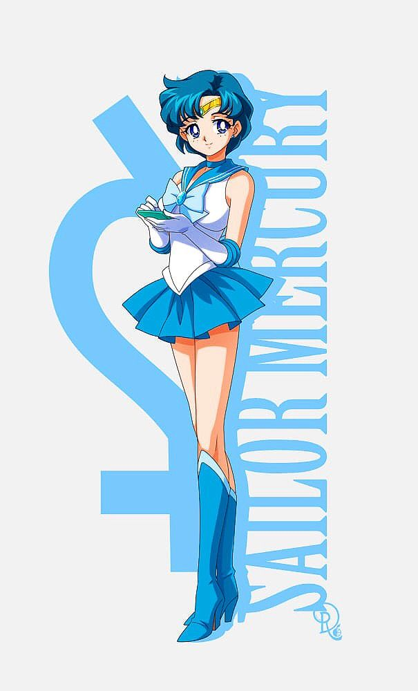

| 🔗http://mercury/information |
|
about
水野 亜美 (Ami Mizuno) [Sailor Mercury] is the intellectual powerhouse of the Sailor Guardians. Her shy and introverted nature causes her classmates to believed her to be snobby and arrogant, but beneath the shyness lies a deeply caring and loyal friend.
appearances
Ami Mizuno (civilian) Sailor Mercury In her Guardian form, Ami's outfit features a white leotard with a blue sailor collar, a sky blue front and back bow, and a pleated skirt. She wears knee-high blue boots, elbow-length gloves with blue trims, and a golden tiara with a blue gem. Her sleeveless style and high-tech visor (Mercury Goggles) give her a tactical edge in battle. She even has a built-in comm system through her earrings! Super Sailor Mercury Ami's collar simplifies, the gem on her bow becomes a heart, and she gains translucent shoulder pads and a larger, flowy back bow. Her choker now features a golden star — showing her evolving power. Eternal Sailor Mercury In her final Guardian form, Ami gets puffy, translucent sleeves, layered blue skirts, and long gloves with v-shaped cuffs. Her tiara gem turns into a star, and her boots shift to white with star accents. Princess Mercury In her royal form, Ami wears a flowing blue gown with golden details and matching starry jewelry. Elegant and regal, Princess Mercury reflects Ami's inner strength and calm wisdom as a ruler of her own world. phrases
Mercury Power, Make Up! Mercury Star Power, Make Up! A stronger transformation used in the later arcs of the original anime and manga. Mercury Planet Power, Make Up! Ami uses this phrase taps into her connection with the planet Mercury itself — a part of her growth as a Guardian. Mercury Crystal Power, Make Up! Her most powerful transformation call, unlocking her Super and Eternal forms with the Mercury Crystal! attacks
Solo Attacks Group Attacks Sailor Planet Attack All Inner Senshi unite for this powerful group strike! Sailor Planet Power Meditation A group-powered finishing move — Mercury joins the others to release intense planetary energy. Shadow Galactica Era (evil) Galactica Gale A corrupted Mercury attack used under the influence of Shadow Galactica — fierce and devastating. Galactica Planet Attack A dark mirror of the Sailor Planet Attack, powered by chaos and betrayal. items
Transformation Pen Star Power Stick An upgraded transformation wand that allows Ami to transform with "Mercury Star Power, Make Up!" Mercury Crystal Her Sailor Crystal, the source of her ultimate power. It enables her final transformations, like "Mercury Crystal Power, Make Up!" Communicator A wrist-worn device used to stay in touch with the other Sailor Guardians. Features a small screen and alert system. Super Computer A compact blue handheld computer that Ami uses to scan areas, analyze data, and strategize during missions. Mercury Goggles A high-tech visor that appears when she touches her earring. It gives her access to data analysis and enemy detection. Mercury Harp A magical harp that appears during her "Mercury Aqua Rhapsody" attack. It channels her energy into musical waves of water magic. |

💙SAILOR MERCURY💙
Name: 水野 亜美, Ami Mizuno, Amy Anderson (DiC), Amy Mizuno (CWi) |
|
|
|
|